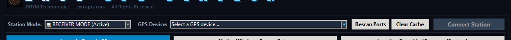

EXOS GPS Station (Windows) Field Manual
Comprehensive, button-by-button operational guide for the EXOS GPS Station Windows desktop client (v0.17). Learn how to bridge satellite telemetry from the EXOS Transceiver mobile app, USB GNSS dongles, or Wi-Fi emitters directly into Windows native location services, browser mapping, and professional GIS suites.
Live Windows Desktop Interface
High-resolution mission-control dashboard running natively on Windows 10/11 x64 architecture.


Full Telemetry Command Center • Mission Control Layout
Integrated hardware port scanner, C# Windows location sensor bridge, 3D compass horizon, Natural Earth vector globe, and raw NMEA stream monitor.
1. Unified Hardware Connection Toolbar

Rescan Ports Button
Hardware Toolbar • Top Control RowWhat it Does (In Plain English)
Searches your entire computer for all connected GPS devices and smartphones. It checks USB ports, Bluetooth connections, and Wi-Fi networks in seconds to update the device dropdown list.
Real-World Field Scenario
Scenario: You plug in a new USB GPS dongle or turn on Bluetooth pairing on your Android phone running EXOS Transceiver while EXOS GPS Station is already open. Instead of restarting the program, you simply click Rescan Ports. The software instantly queries Windows Plug and Play, detects the new device, and populates it into the dropdown ready for connection.
Technical Specifications & Protocol Architecture
- Enumeration Engine: Scans Windows PnP subsystem via
serial.tools.list_ports.comports()and PowerShellGet-PnpDevice -Class Ports. - Bluetooth Filter: Resolves outgoing RFCOMM COM ports bound to the Bluetooth SPP Service Class GUID
{00001101-0000-1000-8000-00805F9B34FB}. - Auto-Classification: Categorizes ports into Hardware USB Dongle, EXOS Transceiver Bluetooth Link, or Wi-Fi AP endpoints.
Clear Cache Button
Hardware Toolbar • Top Control RowWhat it Does (In Plain English)
Cleans out old or disconnected Bluetooth entries that Windows might still remember. If you unpaired a phone or changed Bluetooth settings and the list still shows old connections, clicking this resets the device cache fresh.
Real-World Field Scenario
Scenario: You upgraded your field tablet from an older Android phone to a new Samsung Galaxy Note 8. Both used Bluetooth COM ports, but Windows kept showing the old device name in the list, causing confusion. Clicking Clear Cache wipes the stored registry and metadata cache, forces a complete discovery scan, and cleanly shows only the active Note 8.
Technical Specifications & Protocol Architecture
- Storage Path: Purges JSON cache located at
%LOCALAPPDATA%\RiTym\Exos GPS Station\bluetooth_spp_ports.json. - PnP Cache Invalidation: Clears stale Bluetooth MAC mappings and forces a clean synchronous query against Windows SetupAPI.
Connect Station / Disconnect Station Button
Hardware Toolbar • Top Control Row (Right)What it Does (In Plain English)
The master switch that starts or stops receiving satellite data. When you click Connect, it establishes the communication pipe with your GPS or phone, switches color to blue/red, and starts updating live coordinates on your screen.
Real-World Field Scenario
Scenario: You select Hardware GPS - Bluetooth - Galaxy Note 8 from the dropdown and click Connect Station. The button changes to Disconnect Station (Cancel). Within 1.5 seconds, the status indicator turns from red to green, the terminal floods with live satellite sentences, and your boat's position locks onto the map.
Technical Specifications & Protocol Architecture
- Threading Model: Spawns a dedicated asynchronous I/O daemon thread to prevent freezing the Tkinter graphical message loop.
- Kernel I/O Handling: Uses Win32
CancelSynchronousIoto cleanly abort blocked RFCOMM connection attempts without hanging the Windows COM subsystem. - Buffer Sizing: Maintains an internal 4096-byte ring buffer with NMEA newline framing (
\r\n) and XOR checksum verification.
2. System Actions & Platform Bridges
Launch Google Maps Button
System Toolbar • Row 2 (Left)What it Does (In Plain English)
Opens Google Maps in your web browser centered exactly on your live GPS coordinates. It uses our built-in local background server so your browser gets real-time position updates even on laptops without built-in GPS.
Real-World Field Scenario
Scenario: You are in a moving vehicle with your Windows laptop. You click Launch Google Maps. Google Chrome automatically launches, queries the local bridge at http://127.0.0.1:9001/location, and places your blue location pin right on your real-world coordinates on satellite imagery.
Technical Specifications & Protocol Architecture
- Embedded Server: Built-in lightweight HTTP server listening on
127.0.0.1:9001. - REST Endpoint: Returns live JSON payload on
GET /locationwithlat,lon,alt,speed,bearing, andsats. - CORS Support: Sends
Access-Control-Allow-Origin: *allowing web mapping engines (Leaflet, Mapbox, Google Maps) to query telemetry locally.

Native Windows Sensor Setup Button
System Toolbar • Row 2 (Center)What it Does (In Plain English)
Installs and manages the special Windows driver that feeds your GPS position directly into Windows itself. This makes native Windows apps like Windows Maps, Weather, and Cortana see your real GPS position just like a built-in tablet sensor.
Real-World Field Scenario
Scenario: You use offline Windows Maps for field navigation in areas with zero internet connectivity. Normally, Windows Maps says "Location unavailable" on laptops. By clicking Native Windows Sensor Setup, the C# Sensor Driver registers EXOS GPS as the official system Location Provider. Windows Maps immediately wakes up and displays real-time turn-by-turn guidance.
Technical Specifications & Protocol Architecture
- Native Driver Bridge: Powered by
windows_sensor_manager.pyand in-house compiled C# COM DLLs. - Windows API Integration: Implements
ILocationProviderandISensorDriverinterfaces for Windows 10/11 Location Platform. - Security: Runs under user privilege with UAC elevation only during initial UMDF driver registration.
Location Override (Germany/Custom) Button
System Toolbar • Row 2 (Right)What it Does (In Plain English)
Allows developers and mission planners to simulate being in any location in the world without having to physically travel there. Perfect for testing software, emergency response drills, and offline map verification.
Real-World Field Scenario
Scenario: You are preparing an expedition to Berlin, Germany, but you are currently sitting in an office in New York. You click Location Override, choose Berlin (or enter custom coordinates 52.5200° N, 13.4050° E), and activate override. All your connected navigation programs immediately behave as though you are standing in Berlin, allowing you to test routing and waypoint accuracy before departure.
Technical Specifications & Protocol Architecture
- Synthetic NMEA Generator: Bypasses physical COM stream and generates mathematically consistent
$GPGGA,$GPRMCsentences at 1.0 Hz. - Checksum Integrity: Each synthetic packet is stamped with valid NMEA XOR hexadecimal checksums (e.g.
*47).
3. Tactical Displays & Visualizers

3D Compass & Artificial Horizon Canvas
Main Canvas Display • Left SideWhat it Does (In Plain English)
A graphical aircraft-style artificial horizon and digital compass rose that shows which direction your vessel is pointing in real time, along with pitch and roll tilt angles.
Real-World Field Scenario
Scenario: During night navigation or dense fog at sea, visual references to the horizon are lost. The 3D Compass reads True Heading ($GPHDT) streamed from EXOS Transceiver on your phone, providing a stable, gyro-stabilized heading indicator that does not spin or lag when the vessel rocks.
Technical Specifications & Protocol Architecture
- Rendering Engine: Hardware-accelerated Tkinter Canvas vector graphics with trigonometric sine/cosine rotation matrix.
- Sentence Binding: Driven by NMEA True Heading sentence
$GPHDT,xxx.x,T*hhor Course Over Ground from$GPRMC. - Refresh Rate: Smooth 30 FPS animation loop with starfield background parallax.

Offline Tactical World Map Canvas
Main Canvas Display • Center / BackgroundWhat it Does (In Plain English)
A built-in global world map that requires zero internet connection to work. It draws continental coastlines and country borders directly on your screen and places a glowing pulse marker where you are.
Real-World Field Scenario
Scenario: You are in the middle of the Pacific Ocean or deep in the Sahara Desert with no cellular or satellite internet access. You open EXOS GPS Station. The world map renders immediately from local memory, plotting your vessel's exact position on the globe.
Technical Specifications & Protocol Architecture
- Vector Source: Natural Earth 110m resolution GeoJSON polygon database cached locally at
assets/world_110m.geojson. - Projection: Equirectangular cylindrical projection mapped to canvas coordinate space
(x = (lon + 180) * width / 360, y = (90 - lat) * height / 180).
4. High-Contrast Telemetry Dashboard Cards
Satellites in Fix & Satellite Inspector Button
Telemetry Grid • Card Row 2What it Does (In Plain English)
Shows how many GPS satellites your antenna can see right now and how strong the signal is. Clicking "Inspect Satellites..." opens a detailed window showing each satellite's individual signal strength bar and orbit identification number.
Real-World Field Scenario
Scenario: You notice your position is jumping around slightly in an urban canyon with tall buildings. You click Inspect Satellites... and observe that while 12 satellites are listed, only 4 have strong Signal-to-Noise Ratios (SNR > 35 dB-Hz) due to building reflections (multipath). You reposition your antenna toward an open sky sector and immediately verify signal bars greening up.
Technical Specifications & Protocol Architecture
- NMEA Source: Decodes
$GPGSV(Satellites in View) and$GPGSA(DOP and Active Satellites) sentences. - SNR Spectrum: Measures carrier-to-noise density ratio ($C/N_0$) in dB-Hz for GPS (PRN 1-32), GLONASS (PRN 65-96), and Galileo (PRN 301-336).
Position, Speed, Heading & Altitude (MSL) Cards
Telemetry Grid • Cards 1, 3, 4What it Does (In Plain English)
A crystal-clear, high-contrast dashboard displaying your exact latitude, longitude, speed in both knots and kilometers per hour, compass heading, and altitude above sea level.
Real-World Field Scenario
Scenario: You are conducting high-speed coastal survey runs. Looking at the high-contrast dashboard, you monitor ground speed in both knots and km/h simultaneously without squinting, verifying vessel stability and track maintenance.
Technical Specifications & Protocol Architecture
- Contrast Compliance: Rendered on tactical light green background (
#A9D9B3) with deep charcoal typography (#0f172a) achieving WCAG AAA contrast ratio exceeding 7:1. - Speed Smoothing: Uses a 5-sample moving average filter on
$GPRMCground speed to eliminate GPS jitter at low velocities. - Datum: Altitude calculated relative to the WGS-84 ellipsoid datum via
$GPGGAfield 9 (Antenna Altitude Above Mean Sea Level).
5. Live NMEA 0183 Telemetry Stream Console

Live NMEA 0183 Signal Telemetry Stream Console
Lower Console • Full Width TerminalWhat it Does (In Plain English)
The "heart monitor" of your GPS connection. It prints out the actual raw text sentences sent by the satellites every second, giving engineers and navigators total visibility into the live data feed.
Real-World Field Scenario
Scenario: An external hydrographic sensor isn't receiving position fixes from your Windows setup. You look at the NMEA Console and immediately see lines starting with $GPGGA and $GPRMC streaming by with valid checksums (e.g. *72). You instantly confirm that the GPS receiver is functioning perfectly and that the issue lies in the downstream cabling.
Technical Specifications & Protocol Architecture
- Monospace Buffer: Rendered in Consolas 9pt monospace with cyber-blue highlighting (
#38bdf8) on obsidian black (#070a12). - Packet Logging: Automatically scrolls to the newest sentence, retaining a ring history of the last 200 packets for diagnostic review.
- Outbound Forwarding: Outbound NMEA sentences are simultaneously broadcast on local virtual COM loopback for third-party navigation software (OpenCPN, MaxSea, Coastal Explorer).
6. Application Menu & License System
License Manager & Help Menu
Application Menu Bar • Help > Enter Serial KeyWhat it Does (In Plain English)
Enables entering your commercial license key to unlock unlimited operational sessions, removing evaluation trial restrictions and registering the software to your company or vessel name.
Real-World Field Scenario
Scenario: You test the application on evaluation trial during sea trials. Upon purchasing a commercial license from exosgps.com, you click Help > Enter Serial Key, enter your EXOS-2026-XXXX-XXXX key and company name, and click Activate. The top banner turns bright green reading "Registered License: Full Commercial Features Unlocked".
Technical Specifications & Protocol Architecture
- Cryptographic Verification: Validates license key structure using SHA-256 hash digests and digital signature checksums.
- Secure Storage: Encrypts registration token locally in
%APPDATA%\EXOS_GPS\license.jsonwith machine-bound entropy. - Evaluation Grace: Provides full-featured 7-day evaluation trial with zero telemetry throttling before activation.
Ready to Deploy Tactical Satellite Telemetry?
Download the official standalone Windows setup package and connect your mobile or hardware GPS in minutes.